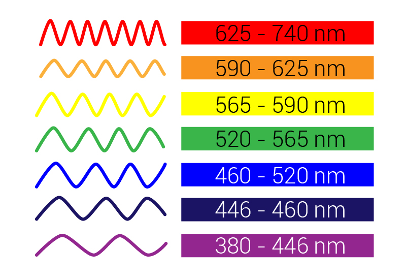
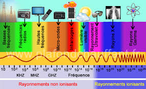
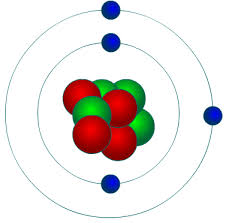
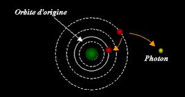
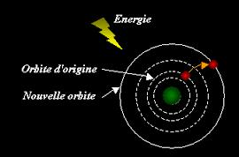

La lumière est une forme d’énergie comme l’électricité. Elle est composée de minuscules grains de lumière appelés « Photons » qui se déplacent sous forme d’onde électromagnétique.
La lumière blanche est composée de lumières colorées : les couleurs primaires tels que le bleu, le vert et le rouge ainsi que les couleurs secondaires comme le jaune, le Cyan et le Magenta. Les couleurs se propagent suivant des ondes différentes (une par couleur).

Une onde est la propagation d'une perturbation produisant sur son passage une variation réversible des propriétés physiques locales du milieu. Elle se déplace avec une vitesse déterminée qui dépend des caractéristiques du milieu de propagation. Une onde transporte de l'énergie sans transporter de la matière.
La lumière, qui est une onde électromagnétique, peut se propager aisément dans l’espace (le vide). Dans le vide et dans l’air, les ondes de lumière se propagent à une vitesse de 300 000km/s.
Le spectre électromagnétique regroupe l'ensemble de toutes les ondes électromagnétiques en fonction de leur longueur d'onde et de leur fréquence.

Située entre les infrarouges et les ultraviolets, le spectre visible n'occupe qu'une toute petite place dans le spectre électromagnétique complet. On appelle lumière visible uniquement la zone des ondes électromagnétiques à laquelle nos yeux sont réceptifs. Les autres animaux ou insectes n'ont pas la même vision que nous : leur spectre de visibilité peut être décalé dans l'IR (moustiques) ou dans l'UV (abeilles).
Tout ce qui nous entoure est constitué de particules infiniment petites : Ce sont des atomes.
Un atome est constitué d’un noyau, autour duquel gravitent des électrons. On représente souvent l’atome comme notre système solaire, le soleil (noyau) est entouré de planètes (les électrons).

Dans un atome, les électrons gravitent autour du noyau en orbites circulaires. Les électrons qui gravitent sur une orbite proche du noyau ont une énergie plus faible que ceux qui gravitent sur une orbite plus éloignée.
Dans un atome, un électron peut changer d’orbite sous certaines conditions. Par exemple, un électron peut passer d’une orbite haute vers une orbite basse : on dit qu’il passe d’un état où il a beaucoup d’énergie vers un état où il en a moins (l’électron libère de l’énergie). Cette quantité d’énergie libérée, qui se trouve obligatoirement quelque part (en physique, rien ne « disparaît »), prend la forme d’un « paquet d'énergie », appelé « photon ».

Une source lumineuse a pour effet d’engendrer ce phénomène de génération de photons à grande échelle.
